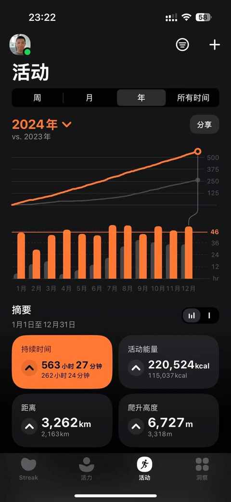
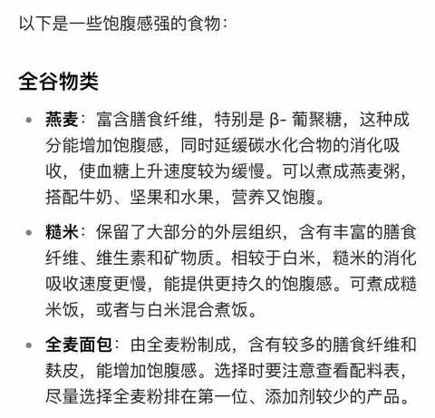
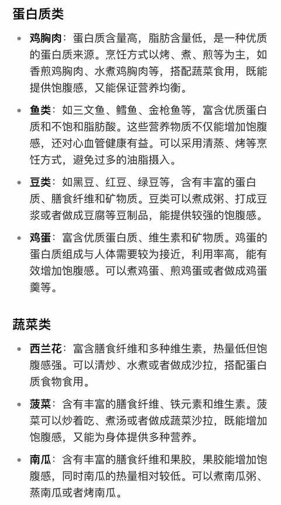
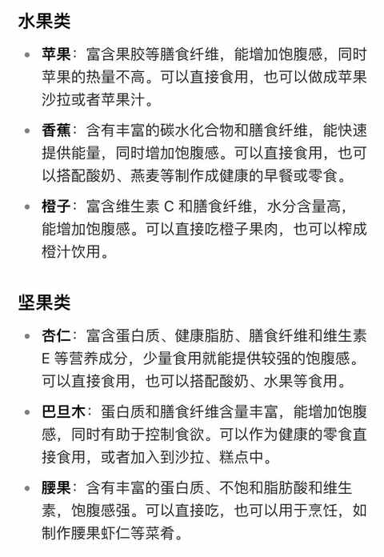
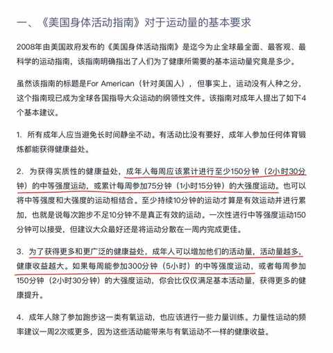
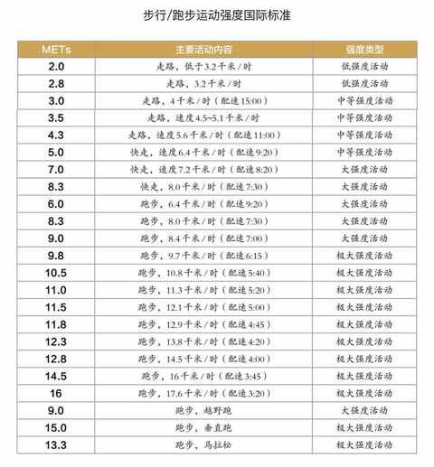

人到中年，减肥后维持体重不反弹一年的感悟
在整个 2024 年，体重的波动范围主要在 73-75kg，偶尔会到 76kg，即使在连续 3-5 天不运动的情况下体重也不会快速增重。
如下图所示，近一年的体重虽有明显波动但没有反弹：

由此，可以得出结论：体重守住了！
一、尊重常识：先谈谈 4 个维持体重的 tips
1️⃣ 与体重最相关的因素：吃
之前看到的很多关于减肥的信息都提到，减肥后饭量会跟着下降，但真实情况是：体重的下降并不一定会带来饭量的下降！
在我身上完全不是这个道理：
我是减肥前能吃多少，现在还能吃多少，饭量和 5 年前不相上下。
如果你和我一样，某段时间运动量很大，但体重不变，那就是吃多了！

2️⃣ 控制摄入量的关键：先满足饱腹感
要严格控制饭量不仅反人性而且很难坚持，调用过多的意志力，往往会带来的就是阶段性的暴饮暴食从而导致体重反弹。
而饱腹感截然不同，相比七分饱之类的模糊词，饱腹感更容易被感知到，也更方便通过简单的方法达成，在吃饱的同时也能吃到少：
① 进食的顺序优化：
先蔬菜，后肉类，然后碳水，最后才是水果和甜品等
② 多吃饱腹感强的食物：



* 以上回复由豆包提供，仅供参考，具体以个人感受为准
3️⃣ 长期有益处的习惯：自己做饭
只有通过密集的做饭才能建立对不同食物的感知，从而达到即使在外面吃饭也能有所克制。
养成做饭的习惯之后，也会更愿意逛超市，逛菜市场，会更多的参与的日常中去。
4️⃣ 客观的指标：体重 和 腰围
刚开始采取的方式是，定期称重：
① 没变：饮食与运动维持良好
② 上升：近一周吃的比较多或运动不足，未产生热量缺口
③ 下降：近一周饮食和运动都充足，有热量缺口
虽然体重是很重要的参考，但更客观的指标是身体的维度，例如特别容易被感知到的腰围。
定期测量并记录腰围的数据，通过数据的变化就能感知到身体的变化。
二、认清现实，中年人必须做选择
1️⃣ 维持体重，是生活方式及理念的调整
体重在某种程度上是生活方式及理念的反馈，基于健康的理念去调整生活方式也能反馈到体重上。
2️⃣ 无需戒掉大餐和零食，但要减少吃大餐和零食的频次
一次大餐摄入的卡路里可能超过日常一天的摄入量。
3️⃣ 不用每天运动，但每周规律进行且强度适宜
运动不仅能提升体力和耐力，还能在饮食上对自己宽松一点点。


* 以上内容来自《无伤跑法》
4️⃣ 不盲从各类方法，简单可执行且适合自己最重要
好的方法必须是简单可执行，在筛选一轮之后再从中选择适合自己去实践。
例如：前期对饮食感知不明显的时候，一定把主要热量缺口设置在一日三餐中对自己工作和生活影响最小的一餐。
维持体重不是一件简单的事情但绝对值得去做，一年的时间里踩过不少坑，通过不断试错有了一些感悟，也希望大家都能达到自己的理想体重和体型。